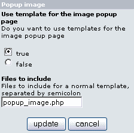

Version: v1.0.0
File: catalog/includes/modules/sts/sts_popup_image.php
Author: Christophe Buchi aka Rigadin2
This is the module used when the “popup_image.php” page is displayed. If it is not installed or is disabled, the default module will be used.

| Parameter | Comment |
| Use templates for popup_image page | Select 'True' to use or 'False' to continue using the default osC popup_image.php file. Keep it set to 'False' if you don't have a specific template for your popup_image.php file. |
| Files to include | List the files to include when displaying “popup_image.php”, separated by semicolons. Those files must be located in “catalog/includes/modules/sts_inc” folder and generally contains code to build extra placeholders. For example: If you need to use the $templatedir$ placeholder, add the file general.php separated by a semicolon( popup_image.php;general.php) |
How it works:
When enabled, the module looks in the template folder (includes/sts_templates/single by default) if a template named popup_image.php.html exists. If not, do not use any template and just display what comes out of popup_image.php.